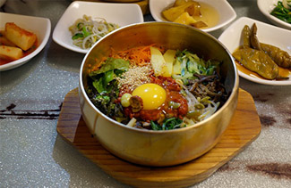

커뮤니티 사업
Home > 센터소개 > 프로그램 소개 > 교육지원 사업 > 한국민요
 SCI 동아리활동 소개
SCI 동아리활동 소개

진행일정
주 1회 진행
진행내용
시니어와 식품영양학과 학생들이 함께 만들어가는 건강한
영양식단과 이를 만드는 실습형 프로그램으로 구성. 총 6회기의
영양식단을 제작하고 어르신들이 냉장고에서 간편하게 꺼내
만들어 드실 수 있는 레시피를 선정하여 만들어보는 동아리 활동.
크레미 유부초밥, 돼지고기 강된장 비빔밥, 삼색수제비 만들기 등
주차별 다양한 음식 조리 실습.